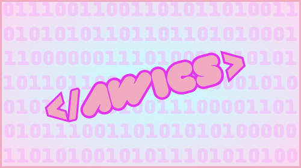

During my sophomore and current junior year, I have been a member of the organization Aggie Women in Computer Science. AWICS is an organization that promotes diversity, equity, and inclusion in the computer science field. We strive to give equal opportunities to women in Computer Science! Click the image to see more!
During my sophomore year, I worked as a Peer Tutor for an introductory programming class for freshman engineers. Peer Tutors provide academic guidance and help to other engineering students. We also mentor freshman TAMU engineers about the ETAM process and career opportunities! Click the image to see more!